| Symbol |
Description |
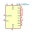
5PB1108PGxx | Description: 1:8 LVCMOS High-Performance Clock Buffer, 1.8V to 3.3V, TSSOP-16
Keys: clock buffer lvcmos
Datasheet: https://www.idt.com/document/dst/5pb11xx-datasheet |
6821 | Description: Peripheral Interface Adapter 1MHz, DIP-40
Keys: PIA
Datasheet: http://pdf.datasheetcatalog.com/datasheet/motorola/6821.pdf |
6822 | Description: Peripheral Interface Adapter 1MHz, DIP-40
Keys: PIA
Datasheet: http://pdf1.alldatasheet.com/datasheet-pdf/view/135452/MOTOROLA/MC6822.html |
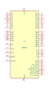
68230 | Description: PIT Interface parallele et Timer
Keys: MPRO
Datasheet: None |
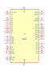
68681 | Description: Interface serie 2 voies + 1 port parallele
Keys: MPRO
Datasheet: None |
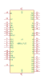
68901_PLCC | Description: Parallel Interface
Keys: MPRO
Datasheet: None |
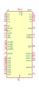
8237 | Description: Programmable DMA Controller, PDIP-40
Keys: 8237 DMA
Datasheet: https://pdos.csail.mit.edu/6.828/2012/readings/hardware/8237A.pdf |
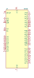
8255 | Description: Programmable Peripheral Interface, PDIP-40
Keys: 8255 PPI
Datasheet: http://aturing.umcs.maine.edu/~meadow/courses/cos335/Intel8255A.pdf |
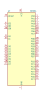
8255A | Description: Programmable Peripheral Interface, PDIP-40
Keys: 8255 PPI
Datasheet: http://aturing.umcs.maine.edu/~meadow/courses/cos335/Intel8255A.pdf |
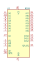
8259 | Description: 8259, Programmable Interrupt Controller, PDIP-28
Keys: PIC
Datasheet: http://pdos.csail.mit.edu/6.828/2005/readings/hardware/8259A.pdf |
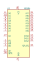
8259A | Description: 8259, Programmable Interrupt Controller, PDIP-28
Keys: PIC
Datasheet: http://pdos.csail.mit.edu/6.828/2005/readings/hardware/8259A.pdf |
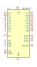
8259A-2 | Description: 8259, Programmable Interrupt Controller, PDIP-28
Keys: PIC
Datasheet: http://pdos.csail.mit.edu/6.828/2005/readings/hardware/8259A.pdf |
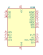
8288 | Description: Bus Controller for Intel 8086/8088/80186/80188 microprocessors, DIP-20
Keys: Bus Controller
Datasheet: http://www.datasheets360.com/pdf/7208679415653955300 |
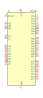
82C55A | Description: CHMOS Programmable Peripheral Interface, PDIP-40
Keys: 8255 PPI
Datasheet: http://jap.hu/electronic/8255.pdf |
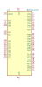
82C55A_PLCC | Description: CHMOS Programmable Peripheral Interface, PLCC-44
Keys: 8255 PPI
Datasheet: http://jap.hu/electronic/8255.pdf |
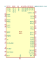
88SE9125C0-NAA | Description: One-Lane PCIe SATA Two-Ports Controller, QFN-76
Keys: PCIe2.0 SATA3.0
Datasheet: https://www.marvell.com/documents/bqcwxsoiqfjkcjdjhkvc/ |
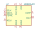
AD9833xRM | Description: 10 bit 25 MHz Programmable Waveform Generator, 2.3V to 5.5V, 12.65mW, MSOP-10
Keys: Direct Digital Synthesizer DDS
Datasheet: https://www.analog.com/media/en/technical-documentation/data-sheets/ad9833.pdf |
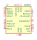
AD9834 | Description: 10 bit 75 MHz Complete Direct Digital Synthesizer, 2.3V to 5.5V, 20mW, TSSOP-20
Keys: Direct Digital Synthesizer DDS
Datasheet: https://www.analog.com/static/imported-files/data_sheets/AD9834.pdf |
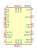
AD9850 | Description: CMOS, 125 MHz, Complete DDS Synthesizer, SSOP-28
Keys: DDS direct digital synthesizer
Datasheet: https://www.analog.com/media/en/technical-documentation/data-sheets/AD9850.pdf |
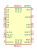
AD9851 | Description: CMOS, 180 MHz, DDS/DAC Synthesizer, SSOP-28
Keys: DDS direct digital synthesizer
Datasheet: https://www.analog.com/media/en/technical-documentation/data-sheets/AD9851.pdf |
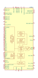
AD9910 | Description: 1 GSPS, 14-Bit, 3.3V CMOS, Direct Digital Synthesizer, QFP-100
Keys: dds direct digital synthesizer
Datasheet: https://www.analog.com/media/en/technical-documentation/data-sheets/AD9910.pdf |
AD9912 | Description: 1 GSPS, 14-bit DAC, Direct Digital Synthesizer, LFCSP-64
Keys: Direct Digital Synthesizer DDS
Datasheet: https://www.analog.com/media/en/technical-documentation/data-sheets/ad9912.pdf |
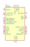
AD9951 | Description: 14-Bit Direct Digital Synthesizer with 400MSPS DAC, 1.8V, TQFP48
Keys: Direct Digital Synthesizer DDS
Datasheet: https://www.analog.com/static/imported-files/data_sheets/AD9951.pdf |
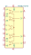
AM26LV32xD | Description: 32Mbps 3.3V RS485 Quad Line Receivers, SOIC-16
Keys: receiver rs485 rs422 differential
Datasheet: http://www.ti.com/lit/ds/symlink/am26lv32.pdf |
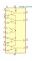
AM26LV32xNS | Description: 32Mbps 3.3V RS485 Quad Line Receivers, SO-16
Keys: receiver rs485 rs422 differential
Datasheet: http://www.ti.com/lit/ds/symlink/am26lv32.pdf |
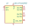
CDCLVP1102RGT | Description: Two-LVPECL Output, High-Performance Clock Buffer, VQFN-16
Keys: Clock Buffer LVDS
Datasheet: http://www.ti.com/lit/ds/symlink/cdclvp1102.pdf |
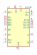
CH376T | Description: File Management USB Flash Card SD Interface, SSOP-20
Keys: USB Mass-Storage SD Card Interface
Datasheet: https://www.mpja.com/download/ch376ds1.pdf |
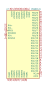
DS90C124 | Description: DC-Balanced 24-Bit FPD-Link II Deserializer, TQFP-48
Keys: DC-Balanced 24-Bit FPD-Link II Deserializer
Datasheet: http://www.ti.com/lit/ds/symlink/ds90c241.pdf |
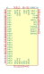
DS90C241 | Description: DC-Balanced 24-Bit FPD-Link II Serializer, TQFP-48
Keys: DC-Balanced 24-Bit FPD-Link II Serializer
Datasheet: http://www.ti.com/lit/ds/symlink/ds90c241.pdf |
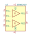
DS90C402 | Description: Dual LVDS Receiver, >155Mbps, 5V, SOIC-8
Keys: Dual LVDS Receiver
Datasheet: http://www.ti.com/lit/ds/symlink/ds90c402.pdf |
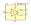
DS90LV011A | Description: LVDS Single High Speed Differential Driver, 400Mbps, SOT-23-5
Keys: LVDS Driver
Datasheet: http://www.ti.com/lit/ds/symlink/ds90lv011a.pdf |
DS90LV027A | Description: LVDS Dual High Speed Differential Driver, >600MBps, SOIC-8
Keys: Dual LVDS Driver
Datasheet: http://www.ti.com/lit/ds/symlink/ds90lv027a.pdf |
FD1771 | Description: Floppy disk controller, DIP-40
Keys: Floppy disk controller
Datasheet: https://amaus.net/static/S100/western%20digital/datasheet/Western%20Digital%20FD1771%20Specification%20197710.pdf |
FIN1019M | Description: 3.3V LVDS High Speed Differential Driver/Receiver, 400Mbps, SOIC-14
Keys: lvds driver reciever
Datasheet: http://www.onsemi.com/pub/Collateral/FIN1019-D.pdf |
FIN1019MTC | Description: 3.3V LVDS High Speed Differential Driver/Receiver, 400Mbps, TSSOP-14
Keys: lvds driver reciever
Datasheet: http://www.onsemi.com/pub/Collateral/FIN1019-D.pdf |
HT12D | Description: 2^12 serial decoder, SOP-20
Keys: Serial Decoder
Datasheet: https://www.holtek.com/documents/10179/116711/2_12dv120.pdf |
HT12E | Description: 2^12 serial encoder, SOP-20
Keys: Serial Encoder
Datasheet: https://www.holtek.com/documents/10179/116711/2_12ev120.pdf |
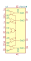
LTC1518 | Description: 52Mbps Precision Delay RS485 Quad Line Receivers
Keys: receiver rs485 rs422 differential
Datasheet: https://www.analog.com/media/en/technical-documentation/data-sheets/15189fa.pdf |
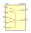
LTC1519 | Description: 52Mbps Precision Delay RS485 Quad Line Receivers
Keys: receiver rs485 rs422 differential
Datasheet: https://www.analog.com/media/en/technical-documentation/data-sheets/15189fa.pdf |
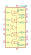
LTC1688 | Description: 100Mbps RS485 Hot Swapable Quad Drivers
Keys: driver rs485 rs422 differential
Datasheet: https://www.analog.com/media/en/technical-documentation/data-sheets/16889fa.pdf |
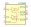
LTC1689 | Description: 100Mbps RS485 Hot Swapable Quad Drivers
Keys: driver rs485 rs422 differential
Datasheet: https://www.analog.com/media/en/technical-documentation/data-sheets/16889fa.pdf |
LTC6957xDD-1 | Description: Low Phase Noise, Dual Output Buffer/Driver/Logic Converter, LVPECL, DFN-12
Keys: LTC clock converter
Datasheet: https://www.analog.com/media/en/technical-documentation/data-sheets/6957fb.pdf |
LTC6957xDD-2 | Description: Low Phase Noise, Dual Output Buffer/Driver/Logic Converter, LVDS, DFN-12
Keys: LTC clock converter
Datasheet: https://www.analog.com/media/en/technical-documentation/data-sheets/6957fb.pdf |
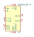
LTC6957xDD-3 | Description: Low Phase Noise, Dual Output Buffer/Driver/Logic Converter, CMOS In-Phase Outputs, DFN-12
Keys: LTC clock converter
Datasheet: https://www.analog.com/media/en/technical-documentation/data-sheets/6957fb.pdf |
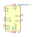
LTC6957xDD-4 | Description: Low Phase Noise, Dual Output Buffer/Driver/Logic Converter, CMOS Complementary Outputs, DFN-12
Keys: LTC clock converter
Datasheet: https://www.analog.com/media/en/technical-documentation/data-sheets/6957fb.pdf |
LTC6957xMS-1 | Description: Low Phase Noise, Dual Output Buffer/Driver/Logic Converter, LVPECL, MSOP-12
Keys: LTC clock converter
Datasheet: https://www.analog.com/media/en/technical-documentation/data-sheets/6957fb.pdf |
LTC6957xMS-2 | Description: Low Phase Noise, Dual Output Buffer/Driver/Logic Converter, LVDS, MSOP-12
Keys: LTC clock converter
Datasheet: https://www.analog.com/media/en/technical-documentation/data-sheets/6957fb.pdf |
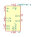
LTC6957xMS-3 | Description: Low Phase Noise, Dual Output Buffer/Driver/Logic Converter, CMOS In-Phase Outputs, MSOP-12
Keys: LTC clock converter
Datasheet: https://www.analog.com/media/en/technical-documentation/data-sheets/6957fb.pdf |
LTC6957xMS-4 | Description: Low Phase Noise, Dual Output Buffer/Driver/Logic Converter, CMOS Complementary Outputs, MSOP-12
Keys: LTC clock converter
Datasheet: https://www.analog.com/media/en/technical-documentation/data-sheets/6957fb.pdf |
MAX6816 | Description: Single Switch Debouncer, SOT-143
Keys: Switch Debouncer
Datasheet: https://datasheets.maximintegrated.com/en/ds/1896.pdf |
MC100EPT22D | Description: 3.3 V Dual LVTTL/LVCMOS to Differential LVPECL Translator, SOIC-8
Keys: PECL buffer interface
Datasheet: https://www.onsemi.com/pub/Collateral/MC100EPT22-D.PDF |
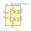
MC100EPT22DT | Description: 3.3 V Dual LVTTL/LVCMOS to Differential LVPECL Translator, TSSOP-8
Keys: PECL buffer interface
Datasheet: https://www.onsemi.com/pub/Collateral/MC100EPT22-D.PDF |
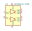
MC100LVELT22D | Description: 3.3 V Dual LVTTL/LVCMOS to Differential LVPECL Translator, SOIC-8
Keys: PECL buffer interface
Datasheet: https://www.onsemi.com/pub/Collateral/MC100LVELT22-D.PDF |
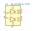
MC100LVELT22DT | Description: 3.3 V Dual LVTTL/LVCMOS to Differential LVPECL Translator, TSSOP-8
Keys: PECL buffer interface
Datasheet: https://www.onsemi.com/pub/Collateral/MC100LVELT22-D.PDF |
MC6840 | Description: Peripheral Interface Adapter 1MHz, DIP-40
Keys: PIA
Datasheet: http://pdf.datasheetcatalog.com/datasheet/motorola/MC6840.pdf |
MC6843 | Description: Floppy Disc Controller, DIP-40
Keys: FDC
Datasheet: http://www.datasheetarchive.com/pdf/download.php?id=355f4f5379c550317997643252fd5cac1bb08e&type=M&query=MC6843P |
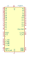
MC6844 | Description: Direct Memory Access Controller 1MHz, DIP-40
Keys: Direct Memory Access Controller
Datasheet: http://pdf.datasheetcatalog.com/datasheets/560/501527_DS.pdf |
MC68A21 | Description: Peripheral Interface Adapter 1.5MHz, DIP-40
Keys: PIA
Datasheet: http://pdf.datasheetcatalog.com/datasheet/motorola/6821.pdf |
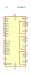
MC68A40 | Description: Peripheral Interface Adapter 1.5MHz, DIP-40
Keys: PIA
Datasheet: http://pdf.datasheetcatalog.com/datasheet/motorola/MC6840.pdf |
MC68A44 | Description: Direct Memory Access Controller 1.5MHz, DIP-40
Keys: Direct Memory Access Controller
Datasheet: http://pdf.datasheetcatalog.com/datasheets/560/501527_DS.pdf |
MC68B21 | Description: Peripheral Interface Adapter 2MHz, DIP-40
Keys: PIA
Datasheet: http://pdf.datasheetcatalog.com/datasheet/motorola/6821.pdf |
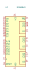
MC68B40 | Description: Peripheral Interface Adapter 2MHz, DIP-40
Keys: PIA
Datasheet: http://pdf.datasheetcatalog.com/datasheet/motorola/MC6840.pdf |
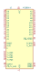
MC68B44 | Description: Direct Memory Access Controller 2MHz, DIP-40
Keys: Direct Memory Access Controller
Datasheet: http://pdf.datasheetcatalog.com/datasheets/560/501527_DS.pdf |
NB3N551MN | Description: 1:4 Low Skew Clock Buffer, DFN-8
Keys: clock buffer
Datasheet: https://www.onsemi.com/pub/Collateral/NB3N551-D.PDF |
ONET1191PRGT | Description: 11.3-Gbps Limiting Amplifier, VQFN-16
Keys: limiting amplifier gigabit ethernet sfp sfp+
Datasheet: http://www.ti.com/lit/ds/symlink/onet1191p.pdf |
PCA9306 | Description: Dual bidirectional I2C Bus and SMBus voltage level translator
Keys: Dual bidirectional I2C Bus and SMBus voltage level translator
Datasheet: http://www.ti.com/lit/ds/symlink/pca9306.pdf |
PCA9306D | Description: Dual bidirectional I2C Bus and SMBus voltage level translator, SO-8
Keys: I2C SMBus
Datasheet: https://www.nxp.com/docs/en/data-sheet/PCA9306.pdf |
PCA9306DC | Description: Dual bidirectional I2C Bus and SMBus voltage level translator, VSSOP-8
Keys: I2C SMBus
Datasheet: https://www.nxp.com/docs/en/data-sheet/PCA9306.pdf |
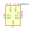
PCA9306DC1 | Description: Dual bidirectional I2C Bus and SMBus voltage level translator, VSSOP-8
Keys: I2C SMBus
Datasheet: https://www.nxp.com/docs/en/data-sheet/PCA9306.pdf |
PCA9306DP | Description: Dual bidirectional I2C Bus and SMBus voltage level translator, TSSOP-8
Keys: I2C SMBus
Datasheet: https://www.nxp.com/docs/en/data-sheet/PCA9306.pdf |
PCA9600D | Description: Dual bidirectional bus buffer, SO-8
Keys: I2C buffer
Datasheet: https://www.nxp.com/docs/en/data-sheet/PCA9600.pdf |
PCA9600DP | Description: Dual bidirectional bus buffer, TSSOP-8
Keys: I2C buffer
Datasheet: https://www.nxp.com/docs/en/data-sheet/PCA9600.pdf |
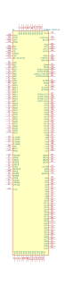
PCI9030-PQFP176 | Description: PCI SMARTarget I/O Accelerator
Keys: PCI
Datasheet: http://lhcb-online.web.cern.ch/lhcb-online/ecs/ccpc/docs/plc-9030-databook.pdf |
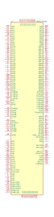
S5933_PQ160 | Description: PCI 2.1 Compliant Master/Slave Device, PQFP-160
Keys: PCI 2.1 Compliant Master/Slave Device
Datasheet: http://datasheet.datasheetarchive.com/originals/distributors/Datasheets-35/DSA-684194.pdf |
SI9986 | Description: Integrated, buffered H-bridge with TTL compatible inputs, 1A, 12V, SOIC-8
Keys: integrated, buffered H-bridge
Datasheet: http://www.vishay.com/docs/70007/si9986.pdf |
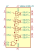
SN65LVDS047D | Description: Quad LVDS Differential Line Driver, 400Mbps, SOIC-16
Keys: Quad LVDS Driver
Datasheet: http://www.ti.com/lit/ds/symlink/sn65lvds047.pdf |
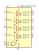
SN65LVDS047PW | Description: Quad LVDS Differential Line Driver, 400Mbps, TSSOP-16
Keys: Quad LVDS Driver
Datasheet: http://www.ti.com/lit/ds/symlink/sn65lvds047.pdf |
SN65LVDS1DBV | Description: High-Speed Differential Line Driver, 630Mbps, SOT-23-5
Keys: LVDS Driver
Datasheet: http://www.ti.com/lit/ds/symlink/sn65lvds1.pdf |
SN75160BDW | Description: Octal general-purpose interface bus transceiver, SOIC-20
Keys: gpib bidirectional bus transceiver
Datasheet: http://www.ti.com/lit/ds/symlink/sn75160b.pdf |
SN75160BN | Description: Octal general-purpose interface bus transceiver, DIP-20
Keys: gpib bidirectional bus transceiver
Datasheet: http://www.ti.com/lit/ds/symlink/sn75160b.pdf |
TB5D1MD | Description: Quad differential PECL driver
Keys: differential PECL driver
Datasheet: http://www.ti.com/lit/ds/symlink/tb5d2h.pdf |
TB5D1MDW | Description: Quad differential PECL driver
Keys: differential PECL driver
Datasheet: http://www.ti.com/lit/ds/symlink/tb5d2h.pdf |
TB5D2H | Description: Quad differential PECL driver
Keys: differential PECL driver
Datasheet: http://www.ti.com/lit/ds/symlink/tb5d2h.pdf |
TB5D2HDW | Description: Quad differential PECL driver
Keys: differential PECL driver
Datasheet: http://www.ti.com/lit/ds/symlink/tb5d2h.pdf |
TB5R1D | Description: Quad differential PECL reciver
Keys: differential PECL reciver
Datasheet: http://www.ti.com/lit/ds/symlink/tb5r1.pdf |
TB5R1DW | Description: Quad differential PECL reciver
Keys: differential PECL reciver
Datasheet: http://www.ti.com/lit/ds/symlink/tb5r1.pdf |
TB5R2D | Description: Quad differential PECL reciver
Keys: differential PECL reciver
Datasheet: http://www.ti.com/lit/ds/symlink/tb5r1.pdf |
TB5R2DW | Description: Quad differential PECL reciver
Keys: differential PECL reciver
Datasheet: http://www.ti.com/lit/ds/symlink/tb5r1.pdf |
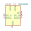
TCA9406DC | Description: 2-Bit Bidirectional 1-MHz, I2C Bus and SMBus Voltage-Level Translator With 8-kV HBM ESD
Keys: Bidirectional 1-MHz I2C SMBus Voltage-Level Translator 8kV HBM ESD
Datasheet: www.ti.com/lit/ds/symlink/tca9406.pdf |
TCA9800 | Description: Level-Translating I2C Bus Buffer/Repeater 0.54mA Current Source, VSSOP-8
Keys: I2C buffer repeater
Datasheet: http://www.ti.com/lit/ds/symlink/tca9800.pdf |
TCA9801 | Description: Level-Translating I2C Bus Buffer/Repeater 1.1mA Current Source, VSSOP-8
Keys: I2C buffer repeater
Datasheet: http://www.ti.com/lit/ds/symlink/tca9801.pdf |
TCA9802 | Description: Level-Translating I2C Bus Buffer/Repeater 2.2mA Current Source, VSSOP-8
Keys: I2C buffer repeater
Datasheet: http://www.ti.com/lit/ds/symlink/tca9802.pdf |
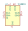
TCA9803 | Description: Level-Translating I2C Bus Buffer/Repeater 3.3mA Current Source, VSSOP-8
Keys: I2C buffer repeater
Datasheet: http://www.ti.com/lit/ds/symlink/tca9803.pdf |
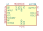
U2270B | Description: IDIC read/write base stations in contactless identification and immobilizer systems, SO-16
Keys: IDIC read/write base stations in contactless identification and immobilizer systems
Datasheet: http://www.farnell.com/datasheets/94393.pdf |
WD2791 | Description: Floppy disk controller, DIP-40
Keys: Floppy disk controller
Datasheet: http://pdf.datasheetcatalog.com/datasheets2/12/1229802_1.pdf |
WD2793 | Description: Floppy disk controller, DIP-40
Keys: Floppy disk controller
Datasheet: http://pdf.datasheetcatalog.com/datasheets2/12/1229802_1.pdf |
WD2795 | Description: Floppy disk controller, DIP-40
Keys: Floppy disk controller
Datasheet: http://pdf.datasheetcatalog.com/datasheets2/12/1229802_1.pdf |
WD2797 | Description: Floppy disk controller, DIP-40
Keys: Floppy disk controller
Datasheet: http://pdf.datasheetcatalog.com/datasheets2/12/1229802_1.pdf |
Z8420 | Description: Parallel I/O, DIP-40
Keys: Z80 PIO parallel
Datasheet: https://www.zilog.com/appnotes_download.php?FromPage=DirectLink&dn=PS0180&ft=Product%20Specification%20(Data%20Sheet)%20%20&f=YUhSMGNEb3ZMM2QzZHk1NmFXeHZaeTVqYjIwdlpHOWpjeTk2T0RBdmNITXdNVGd3TG5Ca1pnPT0= |
Z84C20 | Description: Parallel I/O, CMOS, DIP-40
Keys: Z80 PIO parallel
Datasheet: https://www.zilog.com/appnotes_download.php?FromPage=DirectLink&dn=PS0180&ft=Product%20Specification%20(Data%20Sheet)%20%20&f=YUhSMGNEb3ZMM2QzZHk1NmFXeHZaeTVqYjIwdlpHOWpjeTk2T0RBdmNITXdNVGd3TG5Ca1pnPT0= |